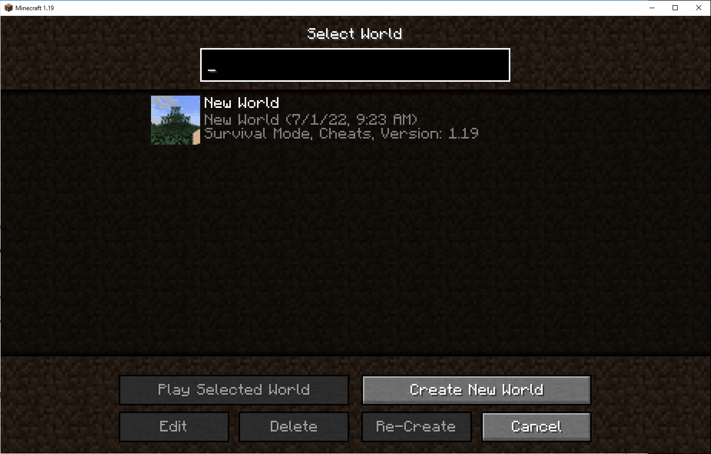
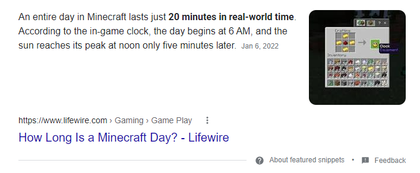

Oh, here we go again. Minecraft, on of my favorite games of all time!
Starting a New World in Minecraft 1.19 after being gone for so many years, feels right.
Jumping back in, the music is all new and it's hitting so hard!! This music is so good. I'm guessing this is still C418, but I'll have to verify that.
When I play video games, I get addicted. So, to eleviate some of that addiction, when I play in this New World, titled New World, I will only* play one day and exit.
What is a day in Minecraft time?
So, 20 minutes is a good length to play, I think.
It's going to be difficult to put the keyboard down and stop playing, but that is the goal.
Yes, this is a Part One. Another goal is to keep you updated on the World's progress here, with this Blog Series.
For those counting, that's two blog series I've signed up for: Minecraft One Day a Day and Bike Commuting to Work. We'll see which of these I can actually keep up with!
Here is where I leave Day One. I'm starting a simple camp, near a river. I've got a campfire, furnace, crafting table, a chest, and a bed to make my home for the time being. I think I'll keep up this spot to start. I spawned in a Tyga Biome, and in the most recent Minecraft Updates, that's become a lot more dangerous than before, so we'll see how long I stay here.
I'm planning on building a fishing ramp of some kind to catch fish, because I might start by eating fish! But I'd also like to build a home inside the mountain. That will give me some protection from the elements and the mobs around! I am playing on Normal Difficulty, as I haven't played in a few years. I used to play on Hard Difficulty, but in recent Minecraft Updates, that has gotten exponentionally more difficult.